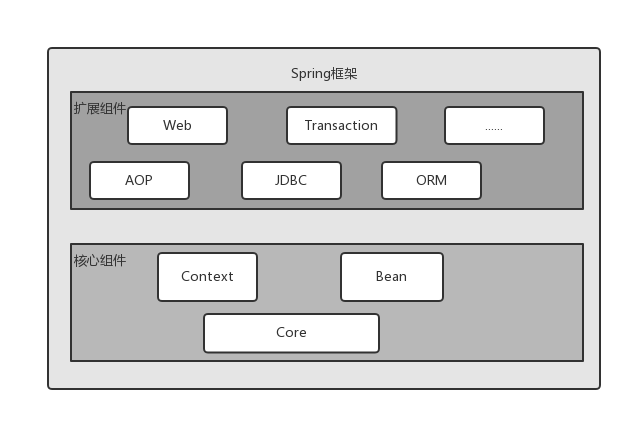
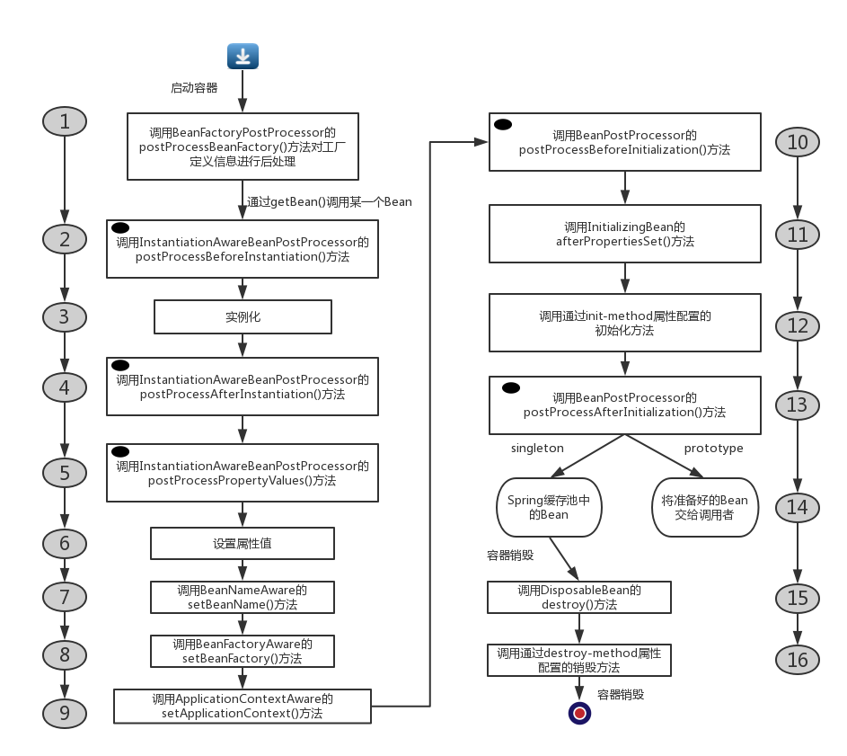

前言
任何学习过Java的童鞋，不管有没有深入了解过Spring，肯定都听说过Spring。Spring也名副其实，它作为现在最优秀的框架之一，无论在工作还是学习过程中都有很重要的地位。我这是第三遍整理Spring的相关内容了，尝试写一篇博客来做个简单的梳理，总结Spring框架基本思路与作用。
Spring结构
Spring总共有十几个组件，为了满足不同的需求Spring提供了不同的组件。但是Spring框架中的核心组件只有三个：Bean，Context和Core，这三个组件是Spring框架的基础设置，没有它们就不会有AOP，Web等上层的功能组件。Spring框架如图所示：

由上图也可以看到Bean，Context和Core组件的重要性，那么这三个组件分别完成什么任务呢？
题目里也有提及，Spring是面向Bean编程，自然Bean组件就是Spring对Java对象Object的封装，在Spring容器中管理的就是被Bean封装了的Java对象。Context组件就是我们经常说的IOC容器，也就是Spring容器。Context组件可以发现每个Bean之间的关系，为它们建立好Bean之间的依赖关系，为Bean提供生存环境。最后的Core组件，它是Context组件与Bean组件的工具包，可以把Core组件理解为Util工具包。
总结来说，Bean组件解决Bean的定义，Bean的创建以及Bean的解析，例如在Spring配置文件中定义的
Spring容器
Spring容器有时候也称为IOC容器，那么什么是IOC呢？IOC：Inverse of Control，控制反转。现在来解释到底控制反转是什么含义？控制反转包括两个方面，一是控制，二是反转。控制是什么？控制就是调用类对某一个接口具体实现类的选择控制权，例如Person类依赖了Move接口，那么Person类可以选择依赖实现了Move接口的OnFoot(步行)类，也可以选择依赖ByCar(坐车)类，这就是调用类(Person)对某一个接口(Move)具体实现类(OnFoot,ByCar)的选择控制权。那么何为反转？本来对某一个接口具体实现类的选择控制权在调用类，现在该选择控制权转交第三方决定，由Spring容器来统一配置管理Bean。为了更好理解IOC，大家经常使用依赖注入来代替控制反转这个概念，即让调用类对某一接口的实现类的依赖关系由第三方容器注入，以移除调用类对某一接口实现类的依赖。那么IOC容器的工作就是通过配置文件和注解来描述类和类之间的依赖关系，利用反射机制完成类的初始化和依赖注入。
BeanFactory和ApplicationContext
BeanFcatory和ApplicationContext经常出现在Spring容器的相关文章中，它们有时候都可以代指为IOC容器，那么它们的区别是什么？简单来说，BeanFactory是Spring框架的核心接口，提供了IOC的配置机制，是Spring的基础设施，面向Spring本身；ApplicationContext建立在BeanFactory之上，提供了更多的面向应用的功能，是Spring给开发者提供了IOC容器接口。大多数场合，我们都是直接使用ApplicationContext而非更加底层的BeanFactory。
Bean的生命周期
Bean的生命周期由多个特定的生命阶段构成，并且每个阶段Spring容器都提供了对开发者的接口，允许外界对Bean加以控制。
Bean的生命周期如图所示(ApplicationContext中Bean的生命周期)，先看图然后在一步一步看：

- 如果在配置文件中声明了工厂后处理器接口BeanFactoryPostProcessor的实现类，那么在Spring容器装载配置文件之后，初始化Bean实例之前将调用这些BeanFactoryPostProcessor对配置信息进行加工处理。也就是说工厂后处理器是容器级别的，仅在容器初始化的时候调用一次，对配置文件进行加工
- 当我们通过getBean(String beanName)方法向容器请求某个Bean实例的时候，如果容器注册了InstantiationAwareBeanPostProcessor接口的实现类，那么在实例化Bean之前，将调用该接口的postProcessBeforeInstantiation()方法
- 实例化Bean
- 如果容器注册了InstantiationAwareBeanPostProcessor接口的实现类，那么在实例化Bean之后，将调用该接口的postProcessAfterInstantiation()方法
- 如果Bean配置了属性信息，那么容器在将属性值配置到Bean中之前，将调用InstantiationAwareBeanPostProcessor接口的postProcessPropertyValues()方法
- 为Bean设置属性值
- 如果Bean实现了BeanNameAware接口，那么就调用该接口的setBeanName()方法，将配置文件中该Bean对应的名称设置到Bean中
- 如果Bean实现了BeanFactoryAware接口，那么就调用该接口的setBeanFactory()方法，将BeanFactory容器实例设置到Bean中
- 如果Bean实现了ApplicationContextAware接口，那么就调用该接口的setApplicationContext()方法，将ApplicationContext容器实例设置到Bean中
- 如果BeanFactory装配了BeanPostProcessor接口的实现类，那么就调用该后处理器的postProcessBeforeInitialization(Object bean , String beanName)方法对Bean进行加工。其中，入参bean是当前正在处理的Bean，而beanName是当前Bean的配置名。开发者可以通过改方法对Bean进行特殊的改造，例如Spring提供的AOP功能就利用BeanPostPrecessor来实现
- 如果Bean实现了InitializingBean接口，那么就调用该接口的afterPropertiesSet()方法
- 如果在
中通过init-method属性定义了初始化方法，那么就执行这个方法 - 这是工厂后处理器BeanPostProcessor接口定义的第二个方法，第一个方法在第10步执行了，该接口的postProcessAfterInitialization(Object bean , String beanName)方法给容器提供了再次对Bean进行加工的机会
- 如果在
中配置的Bean的作用范围是scope=“prototype”，那么就直接将该Bean实例返回给调用者，这些Bean实例不再由Spring容器管理。如果scope=“singleton”，那么就缓存该Bean实例，再返回给调用者，同时Spring容器将继续管理缓存池中的Bean实例 - 对于scope=“singleton”(默认情况)的Bean，当容器关闭的时候，如果Bean实现了DisposableBean接口，那么就调用该接口的destroy()方法
- 对于scope=“singleton”(默认情况)的Bean，如果
通过destroy-method属性配置的销毁方法，那么就调用该方法
上述16步描述了ApplicationContext管理的Bean的生命周期，其中的每一步都调用了相关的方法，主要有以下几类：
- Bean自身的方法：Bean的构造函数，Bean的Setter方法，以及init-method和destroy-method方法
- Bean级生命周期接口方法：这些方法是Spring容器规定的，由Bean实现的方法，例如BeanNameAware接口，BeanFactoryAware接口，ApplicationContextAware接口，InitializingBean接口，DisposableBean接口
- 容器级生命周期接口方法：这些方法是容器来配置实现类的，无需Bean来实现，在流程图中用黑点标识的方法。由于是容器级别的后处理器，这些方法对容器中所有的Bean都起作用。
在ApplicationContext中，只需要在配置文件中通过
FactoryBean
如果某些Bean的实例化过程比较复杂，如果按照XML或者注解来配置的话需要大量的配置信息，并且灵活性也受限制。Spring为了解决这一情况，提供了FactoryBean
- T getObject():返回由FactoryBean创建的Bean的实例。
- boolean isSingleton():由FactoryBean创建的Bean是Singleton还是prototype
- Class<?> getObjectType():返回FactoryBean创建的Bean的类型
当配置文件中
总结
以上就是Spring容器最基本的功能，Spring是如何管理容器中的Bean的。Spring在此基础之上，还提供了面向切面编程的AOP功能实现，以及Web功能等等，但是无论如何Spring容器永远是这些扩展功能的基础。